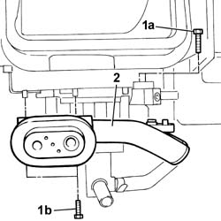
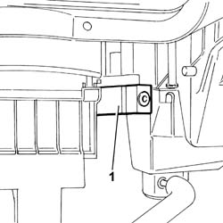

5040B32 EXPANSION VALVE (ORIFICE TUBE) R R WITH AIR CONDITIONER CASE REMOVED
- Path
- Procedures > 50 AUXILIARY UNITS > 5040 AIR CONDITIONING CASING AND COMPONENTS > 5040B SYSTEM SAFETY CHECK DEVICES > 5040B32 EXPANSION VALVE (ORIFICE TUBE) R R WITH AIR CONDITIONER CASE REMOVED
- Kind
- repair procedure (removal / refitting; the operation number is the code)
- Applies to
- all engines; all production periods
- Interactive page
- https://sloeber94.github.io/elrnDB-fDct/en/#/244001286
Applies to: all engines; all production periods
 Removing
Removing
 Refitting
Refitting- Remove the insulation from the expansion valve.
1. Undo the fixing bolts (1a) and (1b).
2. Remove the connector between the expansion valve and the air conditioning system pipes.

Applies to: all engines; all production periods
1. Remove the expansion valve.

Applies to: all engines; all production periods
Refitting
Removing- Position the expansion valve on the air conditioning condenser connector.
- Position the connector between the expansion valve and the air conditioning system pipes and tighten the fixing bolts.
- Refit the insulation on the expansion valve.